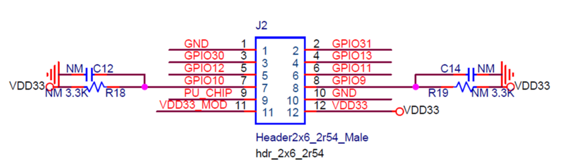

System low power mode is called PDS (Power Down Sleep).
Freertos is used in SDK. In Freertos’ idle task, it checks whether BL702L device can enter into low power mode or not.
If Freertos can sleep, then check whether BLE can sleep. If BLE cannot sleep, BL702L will not enter into low power mode. If BLE can sleep, obtain BLE’s sleep duration.
The final sleep duration of BL702L is the minimum value between Freertos’ idle duration and BLE’s idle duration. If the final sleep duration is smaller than a threshold such as 5ms, then BL702L will not enter into low power mode.
If BLE’s idle duration is greater than Freertos’ idle duration, ble is still in sleep mode when BL702L wake up. In this case, ble will wake up in below two cases.
BLE’s sleep duration is over.
BLE is woken up by software if some ble actions such as advertising will be triggered by application.
If BLE’s idle duration is smaller than (or is equal to) Freertos’ idle duration, BLE will wake up after BL702L wake up from system low power mode.
Low Power API
voidbtble_pds_enable(uint8_tenable)
This API is used to enable or disable low power feature.
In which,
enable=1, enable low power. BL702L will enter into low power mode in idle state.
enable=0, disable low power. BL702L will not enter into low power mode.
If application layer needs to do something before Ble enters into sleep, please call this API to register the callback function. Ble may not be able to sleep at that time while application layer has done something in this callback function, application can handle this case in the callback function registered by btble_set_sleep_aborted_callback.
For example, application layer uses key scan feature, key scan interrupt shall be disabled in the callback function registered by btble_set_before_sleep_callback. Ble may not go to sleep because sleep conditions are not met at that time, then application can enable key scan interrupt in the callback function set by btble_set_sleep_aborted_callback.
In Freertos idle task, when BL702L cannot enter into low power mode, the callback function registered by btble_set_sleep_aborted_callback will be called.
After BL702L wake up, the callback function registered by this API will be called. If application layer needs to do something after BL702L wakes up, please use this api to register the callback function.
For example, if application layer use key scan feature, it shall recover key scan configuration in this callback function because key scan configuration is dropped in low power mode.
How to measure current and average power consumption

Refer to the above schematic diagram,
1.When using a multimeter to measure current, connect the positive pole of the multimeter to VDD33 on J2 , and connect the negative pole of the multimeter to VDD33_MOD on J2 .
2.When using the power monitor to measure average power consumption, the development board is generally powered through the power monitor. The positive pole of the power monitor is connected to VDD33_MOD on J2 , and the negative pole of the power monitor is connected to GND on J2 .